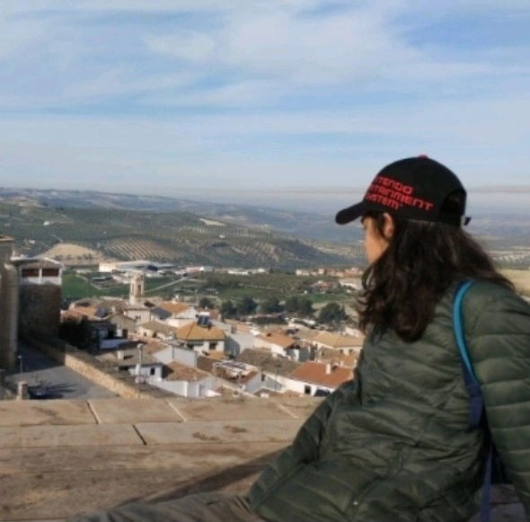

Sobre mí
¬°Hola! üëã Soy Jos√© Funes (alias jofunpe), tengo 17 a√±os (nacido el 14/12/2007) y me apasiona la informática, los videojuegos, el anime y la m√∫sica (rock, metal, electr√≥nica). Actualmente estoy estudiando de forma autodidacta ciberseguridad y programaci√≥n, y en mi tiempo libre disfruto creando contenido, viendo anime y leyendo manga. üöÄ